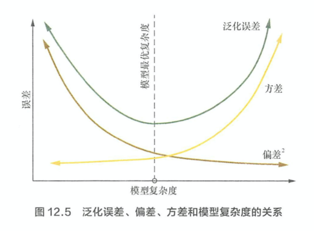

集成学习
集成学习分哪几种，他们有何异同？ > 1. Boosting: 采用串行的方式，各个基础分类器之间有依赖。它的基本思路是将基分类器层层叠加，每一层在训练的时候，对前一层基分类器分错的样本，给予更高的权重。测试时，根据各层分类器的结果的加权得到最终的结果。 > 2. Bagging: 采用并行的方式，各个基分类器之间无依赖。其中比较著名的算法之一是基于决策树的随机森林。为了让及分类器之间互相独立，将训练集分成若干子集（当训练样本较少时，子集之间有重叠）。在最终的决策阶段，每个个体单独做出判断，然后通过投票的方式做出最后的集体决策。
集成学习是如何提高基分类器的性能的？ > 基分类器的误差，是方差和偏差两种错误之和。偏差源于underfitting，方差源于overfitting. Boosting 方法通过逐步聚焦于基分类器分错的样本，减少集成分类器的偏差。Bagging通过对训练样本进行多次采样，分别训练多个不同的模型，然后做综合，来减少分类器的方差。
集成学习的有哪些基本步骤？请以 Adaboosting 来举例。 > 1. initialize equal weights for all samples \[\alpha_{i} = \frac{1}{N}\] > 2. Repeat t = 1,...,T > - learn \(f_{t}(x)\) with data weights \(\alpha_{i}\) > - compute weighted error > \[weighted_{error_{t}} = \sum_{i=1}^{m}\alpha_{i}I(y_{i} \neq f_{t}(x_{i}))\] > - compute coefficient > \[\hat{w_{t}} = \frac{1}{2}\ln(\frac{1 - weighted_{error_{t}} }{weighted_{error_{t}}})\] > - \(\hat{w_{t}}\) is higher when weighted_error is larger > - recomputed weights \(\alpha_{i}\) > \[\alpha_{i} = > \begin{equation} > \left\{ > \begin{array}{lr} > \alpha_{i}e^{-\hat{w_{t}}} \quad if \ f_t(x_i) = y_i & \\ > \alpha_{i}e^{\hat{w_{t}}} \quad if \ f_t(x_i) \neq y_i & > \end{array} > \right. > \end{equation} > \] > - Normalize weights \(\alpha_{i}\) > - if \(x_{i}\) often mistake, weight \(\alpha_{i}\) gets very large > - if \(x_{i}\) often correct, weight \(\alpha_{i}\) gets very small > \[\alpha_{i} = \frac{\alpha_{i}}{\sum_{i}^{m}\alpha_{i}}\] > 3. In the testing time, the final prediction is: > \[ \hat{y_{t}} = sign( \sum_1^T \hat{w_{t}} f_t(x) )\]
常用的基分类器是什么？ > 常用决策树作为基分类器，主要有以下几方面的原因 > 1. 决策树的表达能力和泛化能力，可以通过调节树的层数来方便实现。 > 2. 数据样本的扰动对于决策树的影响较大，因此不同子样本集合生成的决策树随机性较大，这样"不稳定的学习器"更适合作为基分类器。 > 3. 决策树在节点分裂时，随机地选择一个特征子集，从中找出最优分裂特征，很好地引入了随机性。 > 神经网络模型也适合作为基分类器，因为神经网络也是比较"不稳定的"。还可以通过调整神经元的数量，连接方式，网络层数，初始权重引入随机性。
在随机森林中，可否使用线性分类器或者K-近邻作为基分类器？ > 随机森林是属于 Bagging类的集成学习。Bagging的主要好处是集成后的分类器的方差，比基分类器的反差小。Bagging 所采用的基分类器，最好是本身不稳定的分类器，这样才能获得更优的性能。线性分类器或者K-近邻都是较为稳定的分类器，本身反差就不大，所以不适合。
随机森林的随机性体现在哪里？ > 1. 每棵树的样本是随机抽样得到的 > 2. 每课数生长时分裂的属性集合不同
什么是bias 什么是 variance? > Bias 是 underfitting 造成的。Bias是指由所有采样得到的大小为m的训练数据训练出的所有模型的输出的平均值和真实模型输出之间的偏差。 > Variance 是 overfitting 造成的。Variance是之由所有采样得到的大小为m的训练数据集训练出的所有模型的输出方差。

GBDT的基本原理是什么？ > Gradient Boosting 是 Boosting 中的一大类算法，其基本思想是根据当前模型损失函数的负梯度信息来训练新加入的弱分类器，然后将训练好的的弱分类器以累加的形式结合到现有模型中。
GBDT 和 Adatboost 的关系和区别是什么？ > 和AdaBoost一样，Gradient Boosting也是重复选择一个表现一般的模型并且每次基于先前模型的表现进行调整。不同的是，AdaBoost是通过提升错分数据点的权重来定位模型的不足而Gradient Boosting是通过算梯度（gradient）来定位模型的不足。因此相比AdaBoost, Gradient Boosting可以使用更多种类的目标函数,而当目标函数是均方误差时，计算损失函数的负梯度值在当前模型的值即为残差。当目标函数不是 square loss 时残差并不一定等于负梯度。Adaboost 是 GBDT 的一个特例，GBDT 是 Adaboost的推广。 > \[\left\{ \begin{aligned} & L(y_i, F(x_i)) = \frac{1}{2} * (y_i - F(x_i))^2 \\ & - \frac{\partial(y_i, F(x_i))}{\partial F(x_i)} = (y_i - F(x_i)) \end{aligned}\right.\]
GBDT 为什么要拟合上一次模型的负梯度？ > 我们要拟合损失函数的负梯度，可以看做拟合一个方向为负梯度方向，步长为单位长度的值，所以拟合的过程相当于我们沿着负梯度方向走了一个步长，具体走多少步（多少步可以理解为训练多少个决策树来拟合该分类器，使得损失函数最低）达到终止的条件，即走到最优点的附近。
梯度提升和梯度下降的区别和联系？ > 两者都是在每一轮迭代中，利用损失函数相对于模型的负梯度方向信息来对当前模型进行更新。在梯度下降中，模型是以参数化形式表示，从而模型的更新等价于参数的更新。在梯度提升中，模型并不需要进行参数化表示，而是直接定义在函数空间中。

GBDT和局限性有哪些？ > GBDT 在高纬度稀疏数据集上，表现不如支持向量机或者神经网络。 > 训练过程需要串行训练。
XGBoost 与 GBDT 的联系和区别？ > 1. 原始的 GBDT 算法基于损失函数的负梯度来构造信贷决策树，只是在决策树构建完成构造新的决策树，只是在决策树构建完成后进行剪枝。而 XGBoost在决策树构建阶段就加入了正则项。 > 2. 不同的决策树算法采用不同的准则来进行树的构建，比如 IC3 采用信息增益，C4.5 为了克服特征中取值较多的特征而采用信息增益比， CART 采用基尼系数和平方误差。XGBoost 将预测值带入到损失函数中求得损失函数的当前最小值，然后计算出分裂前后损失函数的差值，利用最大化这个差值来作为准则完成树的构建。 > 总的来说，两者的区别和联系可以总结为: > a. GBDT是机器学习算法，XGBoost 是其工程实现。 > b. 在使用 CART 作为基分类器时，XGBoost 显式加入正则项来控制模型的复杂度，有利于防止过拟合。 > c. GBDT在模型训练时只使用了代价函数的一阶导数信息，XGBoost对代价函数进行二阶泰勒展开，可以同时使用一阶和二阶导数。 > d. 传统的 GBDT 采用 CART 作为基分类器，XGBoost 支持多种基分类器。 > e. 传统的 GBDT 在每轮迭代时使用全部的数据，XGBoost 则采用了与随机森林相似的策略，支持对数据进行采样。 > f. XGBoost能够自动学习出缺失值的处理策略